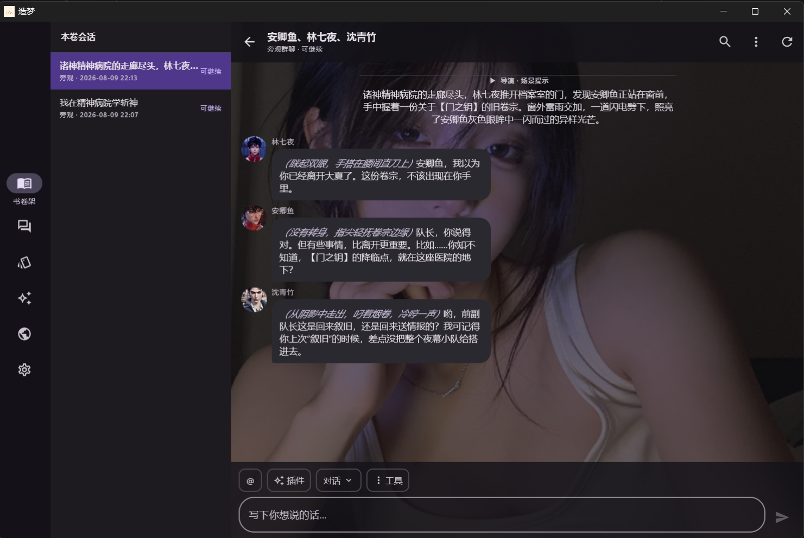
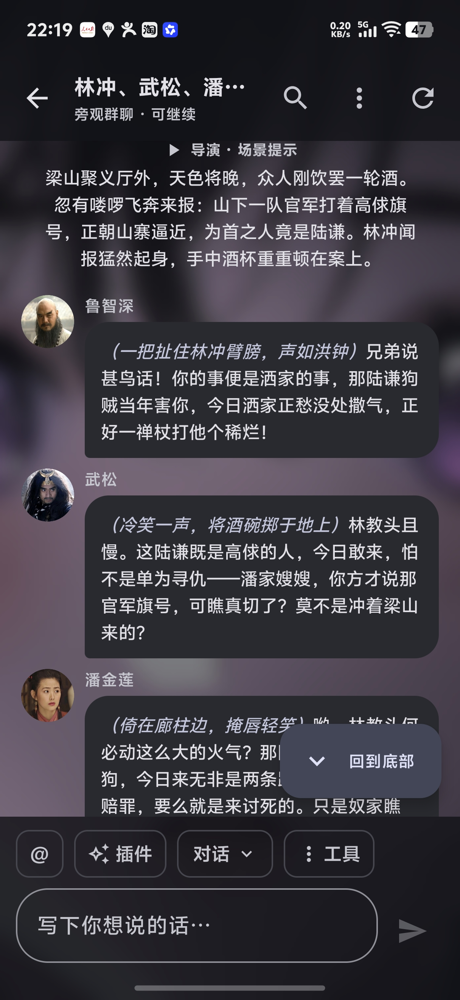

放入你的小说
导入 TXT、EPUB 或已有书卷包。长篇原文在本地解析，不必上传到中心服务器。
把中文小说中的人物、关系与记忆蒸馏出来。让每个角色带着自己的性格、立场和经历，在新的故事里相遇。
第一次使用？跟着 4 步完成首次对话
不只是聊天机器人
“有些角色不是被写完了，
只是还没被真正叫醒。”
造梦关心的不只是角色会说什么，更关心他们为什么这样说。文本中的经历、关系、矛盾和未竟之事，共同构成一个角色。
从一本书开始
导入 TXT、EPUB 或已有书卷包。长篇原文在本地解析，不必上传到中心服务器。
提炼人物资料、性格与立场，梳理关系图谱和世界时间线，并支持持续校对。
选择角色与场景，进入流式多角色对话。每个人都带着自己的记忆和关系开口。
第一次使用造梦
不需要会编程。先准备一个兼容的 AI 模型服务，再导入小说、等待人物蒸馏完成，就可以创建多角色会话。
Android 用户下载 APK；Windows、macOS 和 Linux 用户下载对应的桌面版本。安装完成后直接打开应用。
蒸馏人物和聊天都需要模型。进入模型设置，选择服务商预设和模型，填写服务商提供的 API Key；本地 Ollama 通常不需要 Key。
选择 TXT 或 EPUB 小说，填写想提取的人物名，保留“建立后立即蒸馏”。应用会先显示预计调用次数、Token 和耗时。
等书卷出现“人物资料和关系已经整理完成”，新建会话，选择书卷、你的身份和出场人物；场景卡可以暂时不选。
细节让角色成立
从人物资料到群聊现场，从长期记忆到世界时间线，造梦把角色需要的上下文组织成一个可继续生长的世界。
人物资料、性格、立场、关系图谱和时间线互相连接。支持 AI 补全与人工校对，让人物包越用越准确。
应用内嵌服务与数据库。模型密钥通过平台安全存储管理，书卷和会话由你掌控。
内置插件与插件管理，让新的能力自然进入对话。
查看插件开发教程导入、导出和分享人物世界，也能从在线书库发现作品。
一套体验，多种设备

开始造梦
造梦 2.0 基于 Compose Multiplatform 构建，覆盖 Android、桌面与 iOS。应用数据默认保存在本机。
前往 GitHub Releases从 1.5.0 及更早版本升级？ 2.0.0 是阻断性升级。请先在旧版中导出 .zaomeng-run.zip 书卷包，再安装新版本。
openclaw skills install wkbin/zaomeng-skill